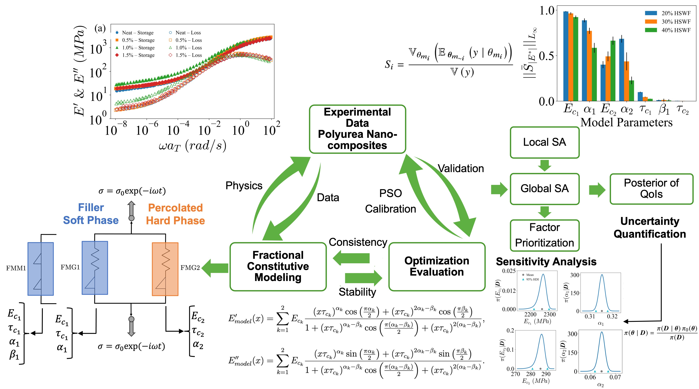

Sensitivity-Analysis-of-Fractional-Constitutive-Models
This repository provides a computational framework for conducting sensitivity analysis on fractional-order constitutive models. In particular, this repository focuses on a derivative-based local sensitivity analysis (LSA) and a variance-based (Sobol' indices) global sensitivity analysis (GSA) for constitutive models consist of parallel Fractional Maxwell Model (FMM) and Fractional Maxwell Gel (FMG) models capturing the dynamic viscoelastic response of neat and nanocomposite polyureas. The framework relies on in-house Python code for LSA and SALib package for GSA.
Big Picture
This repository is a part of a larger project aiming to develop a framework for deterministic and probabilistic calibration of fractional-order constitutive models capturing the linear viscoelastic response of polyurea nanocomposites. Deterministic calibration has been accomplished with PSO (Optimization Repository), while derivative-based local sensitivity analysis (LSA) and variance-based global sensitivity analysis (GSA) have been conducted as a bridge toward a probabilistic perspective. These analyses facilitate factor prioritization and dimensionality reduction by identifying non-influential parameters that can be treated deterministically. Finally, Bayesian inference and uncertainty quantification (UQ) have been performed to conclude this comprehensive model development and analysis framework (BI & UQ Repository). Figure 1 depicts a schematic overview of this framework. This repository focuses specifically on the sensitivity analysis components.

Repository Structure
configs/: Configuration files defining model parameters and their bounds for sensitivity analysis, and simulation settings.dataset/: Optimized model parameters.docs/: Markdown source files for the MkDocs documentation site.notebooks/: Interactive Jupyter notebooks detailing the workflow, from data preprocessing and model implementation to final visualizations.results/: Exported sensitivity indices and plots.scripts/: Python main scripts and modules for LSA and GSA for both models.
Installation
First, clone the repository and navigate into the project directory:
git clone git@github.com:armankhoshnevis/Sensitivity-Analysis-of-Fractional-Constitutive-Models.git
cd Sensitivity-Analysis-of-Fractional-Constitutive-Models
Option A: Python venv & pip (Recommended for Running Locally)
If it is preferred to use standard Python virtual environments locally, pip alongside the requirements.txt file can be used. Then, execute the following commands:
python -m venv env
# On Windows:
.\env\Scripts\activate
# On macOS/Linux:
source env/bin/activate
pip install -r requirements.txt
Option B: Conda (Recommended for Running on Clusters)
If it is preferred to run the codes on a cluster, environment.yml file is used to ensure exact dependency and Python version matching. Then, execute the following commands:
module load Miniforge3 # Replace with your specific cluster's module if different
conda env create -f environment.yml
conda activate SA_Project
Quick Run
Running Locally
Once your environment is activated (via Conda or venv), navigate to the script directory and execute the Python files directly from your terminal:
- Global Sensitivity Analysis
cd scripts/GSA
python fmg_gsa_main.py --HS 20 --GnP_idx 0
python fmg_gsa_vis.py --S 'S1' --E 'Ep' --N 2048 --HS 20
Note: GSA scripts perform sensitivity analysis for a given list of number of realizations. Please adjust the script accordingly.
- Local Sensitivity Analysis
python fmg_lsa_main.py --HS 20 --GnP_idx 0 --n_mc 100000 --batch_size 50000
python fmg_lsa_vis.py --E_type 'Ep' --HS 20
Running on a SLURM Cluster
If you are running the inference on a cluster that uses the SLURM workload manager, a sample batch script (gsa.sh and lsa.sh) is provided. The script is pre-configured to activate the SA_Project conda environment.
cd scripts/GSA
sbatch gsa.sb
Note: The script's output and any errors will be automatically logged to standard .out and .err files in the working directory.
Documentation
Please refer to this link for more comprehensive documentations.
Citation Requirements
If you use this software, please cite it and its corresponding paper, as:
-
Software citation:
-
APA style: Khoshnevis, A. (2026). Sensitivity Analysis of Fractional Constitutive Models (Version 1.0.0) [Computer software]. https://github.com/armankhoshnevis/Sensitivity-Analysis-of-Fractional-Constitutive-Models
-
BibTeX entry:
@software{Khoshnevis_SA_2026,
author = {Khoshnevis, Arman},
license = {Apache-2.0},
month = apr,
title = {{Sensitivity Analysis of Fractional Constitutive Models}},
url = {https://github.com/armankhoshnevis/Sensitivity-Analysis-of-Fractional-Constitutive-Models},
version = {1.0.0},
year = {2026}
}
-
-
Paper citation:
- @article{khoshnevis2025stochastic,
title={Stochastic Generalized-Order Constitutive Modeling of Viscoelastic Spectra of Polyurea-Graphene Nanocomposites},
author={Khoshnevis, Arman and Tzelepis, Demetrios A and Ginzburg, Valeriy V and Zayernouri, Mohsen},
journal={Engineering Reports},
volume={7},
number={9},
pages={e70367},
year={2025},
publisher={Wiley Online Library}
}
- @article{khoshnevis2025stochastic,
Contributions
This repository is a static archive of the project code. The software is provided "as-is" and is not actively maintained. Please see CONTRIBUTING.md for more details.